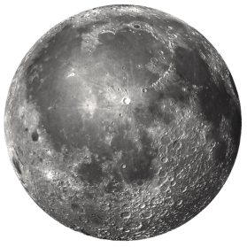
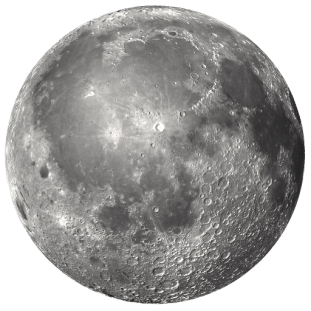

MO
ON

Visite a lua, deixe sua marca.
Comprar passagens
Explore a Lua
A Lua é um satélite natural de tamanho muito inferior ao da Terra, mas localizado relativamente próximo ao planeta, sendo o único satélite natural presente na órbita da Terra.
A primeira pessoa a pisar na lua foi Neil Armstrong em 20 de julho de 1969. Buzz Aldrin fez o feito logo em seguida, 19 minutos depois. Os astronautas viajaram na Apollo 11, e suas pegadas na lua mudaram a história para sempre.
Assim como a Terra, a lua se subdivide em três partes: crosta, manto e núcleo, sendo que, em virtude de um maior resfriamento, a crosta da lua é bem dura.